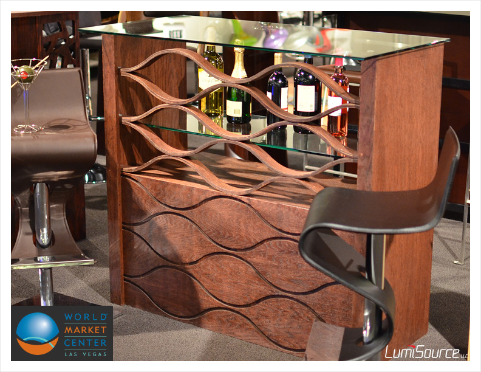
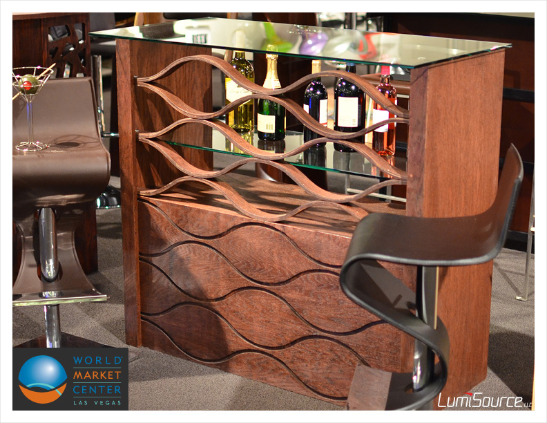

Wave Bar
This home bar table was designed and prototyped during my product design internship with LumiSource, a furniture, lighting, and home decor company. It's goal was to provide a stylish and economic home bar solution for contemporary tastes on a budget.
Market Studies
Existing home bar sets from comparable companies were studied to assess expected features, materials, price points, etc., and to discover potential market opportunities. This was aimed at the $500 level, priced below most comparable existing bars without sacfricing style.
Inspiration
The simple but sturdy construction of bookcases provided structural guidance. Spare pieces from another project provided unexpected inspiration for the form of the facade.
Concept
The Wave Bar incorporates findings from market studies and provides a cost-effective and sturdy structure, while providing an aesthetically-pleasing lattice form that continues from solid to void.
Development
Multiple combinations of material and lattice form were considered, weighing aethetics and perceived value with material costs. The uniform lattice was ultimately chosen, largely due to its cost savings from using only one mould to create all the lattice pieces.
Flat Pack Design
The Wave Bar and all the parts that make up the assembly were designed for maximum efficiency in transportation and storage through flat pack design.Lattice Prototyping
The lattice pattern was produced by constructing a mould with the lattice profile and vacuum-forming five stacks of glued plywood sheets to this mould. The same profile was CNC routed out of the front panel to continue the pattern in void.
Finishing
Once all the necessary pieces were cut, bend, and/or sanded, the surfaces were treated with a cherry stain. 

Presentation
The built prototype was displayed at World Market Center in Las Vegas in July of 2013, where it was met with great reception and is currently being refined for production.